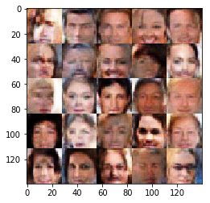
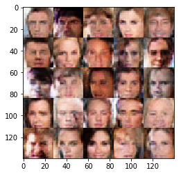

人脸生成（Face Generation）
在该项目中，你将使用生成式对抗网络（Generative Adversarial Nets）来生成新的人脸图像。
获取数据
该项目将使用以下数据集：
- MNIST
- CelebA
由于 CelebA 数据集比较复杂，而且这是你第一次使用 GANs。我们想让你先在 MNIST 数据集上测试你的 GANs 模型，以让你更快的评估所建立模型的性能。
如果你在使用 FloydHub, 请将 data_dir 设置为 “/input” 并使用 FloydHub data ID “R5KrjnANiKVhLWAkpXhNBe”.
1 | data_dir = './data' |
Found mnist Data
Found celeba Data探索数据（Explore the Data）
MNIST
MNIST 是一个手写数字的图像数据集。你可以更改 show_n_images 探索此数据集。
1 | show_n_images = 25 |
<matplotlib.image.AxesImage at 0x213247f2358>CelebA
CelebFaces Attributes Dataset (CelebA) 是一个包含 20 多万张名人图片及相关图片说明的数据集。你将用此数据集生成人脸，不会用不到相关说明。你可以更改 show_n_images 探索此数据集。
1 | show_n_images = 25 |
<matplotlib.image.AxesImage at 0x2132486a9b0>预处理数据（Preprocess the Data）
由于该项目的重点是建立 GANs 模型，我们将为你预处理数据。
经过数据预处理，MNIST 和 CelebA 数据集的值在 28×28 维度图像的 [-0.5, 0.5] 范围内。CelebA 数据集中的图像裁剪了非脸部的图像部分，然后调整到 28x28 维度。
MNIST 数据集中的图像是单通道的黑白图像，CelebA 数据集中的图像是 三通道的 RGB 彩色图像。
建立神经网络（Build the Neural Network）
你将通过部署以下函数来建立 GANs 的主要组成部分:
model_inputsdiscriminatorgeneratormodel_lossmodel_opttrain
检查 TensorFlow 版本并获取 GPU 型号
检查你是否使用正确的 TensorFlow 版本，并获取 GPU 型号
1 | """ |
D:\Users\Lenovo\Anaconda3\envs\tensorflow-gpu\lib\importlib\_bootstrap.py:222: RuntimeWarning: numpy.dtype size changed, may indicate binary incompatibility. Expected 96, got 88
return f(*args, **kwds)
TensorFlow Version: 1.9.0
Default GPU Device: /device:GPU:0输入（Input）
部署 model_inputs 函数以创建用于神经网络的 占位符 (TF Placeholders)。请创建以下占位符：
- 输入图像占位符: 使用
image_width，image_height和image_channels设置为 rank 4。 - 输入 Z 占位符: 设置为 rank 2，并命名为
z_dim。 - 学习速率占位符: 设置为 rank 0。
返回占位符元组的形状为 (tensor of real input images, tensor of z data, learning rate)。
1 | import problem_unittests as tests |
Tests Passed辨别器（Discriminator）
部署 discriminator 函数创建辨别器神经网络以辨别 images。该函数应能够重复使用神经网络中的各种变量。 在 tf.variable_scope 中使用 “discriminator” 的变量空间名来重复使用该函数中的变量。
该函数应返回形如 (tensor output of the discriminator, tensor logits of the discriminator) 的元组。
1 | def discriminator(images, reuse=False, alpha=0.1): |
Tests Passed生成器（Generator）
部署 generator 函数以使用 z 生成图像。该函数应能够重复使用神经网络中的各种变量。
在 tf.variable_scope 中使用 “generator” 的变量空间名来重复使用该函数中的变量。
该函数应返回所生成的 28 x 28 x out_channel_dim 维度图像。
1 | def generator(z, out_channel_dim, is_train=True, alpha=0.1): |
Tests Passed损失函数（Loss）
部署 model_loss 函数训练并计算 GANs 的损失。该函数应返回形如 (discriminator loss, generator loss) 的元组。
使用你已实现的函数：
discriminator(images, reuse=False)generator(z, out_channel_dim, is_train=True)
1 | def model_loss(input_real, input_z, out_channel_dim, smooth=0.1): |
Tests Passed优化（Optimization）
部署 model_opt 函数实现对 GANs 的优化。使用 tf.trainable_variables 获取可训练的所有变量。通过变量空间名 discriminator 和 generator 来过滤变量。该函数应返回形如 (discriminator training operation, generator training operation) 的元组。
1 | def model_opt(d_loss, g_loss, learning_rate, beta1): |
Tests Passed训练神经网络（Neural Network Training）
输出显示
使用该函数可以显示生成器 (Generator) 在训练过程中的当前输出，这会帮你评估 GANs 模型的训练程度。
1 | """ |
训练
部署 train 函数以建立并训练 GANs 模型。记得使用以下你已完成的函数：
model_inputs(image_width, image_height, image_channels, z_dim)model_loss(input_real, input_z, out_channel_dim)model_opt(d_loss, g_loss, learning_rate, beta1)
使用 show_generator_output 函数显示 generator 在训练过程中的输出。
注意：在每个批次 (batch) 中运行 show_generator_output 函数会显著增加训练时间与该 notebook 的体积。推荐每 100 批次输出一次 generator 的输出。
1 | def train(epoch_count, batch_size, z_dim, learning_rate, beta1, get_batches, data_shape, data_image_mode): |
MNIST
在 MNIST 上测试你的 GANs 模型。经过 2 次迭代，GANs 应该能够生成类似手写数字的图像。确保生成器 (generator) 低于辨别器 (discriminator) 的损失，或接近 0。
1 | batch_size = 64 |
Epoch 1/2... Batch 10... Discriminator Loss: 0.9627... Generator Loss: 0.7875
Epoch 1/2... Batch 20... Discriminator Loss: 0.9174... Generator Loss: 0.8130
Epoch 1/2... Batch 30... Discriminator Loss: 0.7045... Generator Loss: 1.2363
Epoch 1/2... Batch 40... Discriminator Loss: 0.7240... Generator Loss: 2.1126
Epoch 1/2... Batch 50... Discriminator Loss: 0.5128... Generator Loss: 1.8915
Epoch 1/2... Batch 60... Discriminator Loss: 0.8241... Generator Loss: 1.0503
Epoch 1/2... Batch 70... Discriminator Loss: 0.7746... Generator Loss: 1.4643
Epoch 1/2... Batch 80... Discriminator Loss: 0.5734... Generator Loss: 1.8580
Epoch 1/2... Batch 90... Discriminator Loss: 0.5254... Generator Loss: 2.3466
Epoch 1/2... Batch 100... Discriminator Loss: 0.5721... Generator Loss: 3.0006
Epoch 1/2... Batch 110... Discriminator Loss: 0.4951... Generator Loss: 2.8843
Epoch 1/2... Batch 120... Discriminator Loss: 0.6080... Generator Loss: 1.9425
Epoch 1/2... Batch 130... Discriminator Loss: 0.6788... Generator Loss: 1.9291
Epoch 1/2... Batch 140... Discriminator Loss: 0.5260... Generator Loss: 2.1446
Epoch 1/2... Batch 150... Discriminator Loss: 0.5936... Generator Loss: 2.2602
Epoch 1/2... Batch 160... Discriminator Loss: 0.9277... Generator Loss: 1.1499
Epoch 1/2... Batch 170... Discriminator Loss: 0.7266... Generator Loss: 2.0648
Epoch 1/2... Batch 180... Discriminator Loss: 0.9038... Generator Loss: 1.4034
Epoch 1/2... Batch 190... Discriminator Loss: 0.6906... Generator Loss: 2.4101
Epoch 1/2... Batch 200... Discriminator Loss: 0.6886... Generator Loss: 2.0620Epoch 1/2... Batch 210... Discriminator Loss: 0.9148... Generator Loss: 1.5641
Epoch 1/2... Batch 220... Discriminator Loss: 1.1484... Generator Loss: 1.0639
Epoch 1/2... Batch 230... Discriminator Loss: 0.9669... Generator Loss: 1.3079
Epoch 1/2... Batch 240... Discriminator Loss: 0.7315... Generator Loss: 1.7730
Epoch 1/2... Batch 250... Discriminator Loss: 0.8537... Generator Loss: 1.7153
Epoch 1/2... Batch 260... Discriminator Loss: 0.8256... Generator Loss: 1.6790
Epoch 1/2... Batch 270... Discriminator Loss: 0.8870... Generator Loss: 2.2118
Epoch 1/2... Batch 280... Discriminator Loss: 0.9213... Generator Loss: 1.4661
Epoch 1/2... Batch 290... Discriminator Loss: 0.7770... Generator Loss: 1.9560
Epoch 1/2... Batch 300... Discriminator Loss: 0.8099... Generator Loss: 2.1415Epoch 1/2... Batch 310... Discriminator Loss: 0.8594... Generator Loss: 2.2313
Epoch 1/2... Batch 320... Discriminator Loss: 0.9495... Generator Loss: 1.7784
Epoch 1/2... Batch 330... Discriminator Loss: 0.8249... Generator Loss: 1.7010
Epoch 1/2... Batch 340... Discriminator Loss: 0.8699... Generator Loss: 1.9127
Epoch 1/2... Batch 350... Discriminator Loss: 0.7958... Generator Loss: 1.8774
Epoch 1/2... Batch 360... Discriminator Loss: 0.8858... Generator Loss: 1.2416
Epoch 1/2... Batch 370... Discriminator Loss: 0.8622... Generator Loss: 1.4814
Epoch 1/2... Batch 380... Discriminator Loss: 0.8390... Generator Loss: 1.5083
Epoch 1/2... Batch 390... Discriminator Loss: 0.9377... Generator Loss: 1.2274
Epoch 1/2... Batch 400... Discriminator Loss: 0.7196... Generator Loss: 2.0331Epoch 1/2... Batch 410... Discriminator Loss: 0.8298... Generator Loss: 1.6503
Epoch 1/2... Batch 420... Discriminator Loss: 0.7834... Generator Loss: 1.5748
Epoch 1/2... Batch 430... Discriminator Loss: 0.8089... Generator Loss: 2.0889
Epoch 1/2... Batch 440... Discriminator Loss: 0.8478... Generator Loss: 1.5553
Epoch 1/2... Batch 450... Discriminator Loss: 0.8038... Generator Loss: 1.5093
Epoch 1/2... Batch 460... Discriminator Loss: 0.7762... Generator Loss: 2.0020
Epoch 1/2... Batch 470... Discriminator Loss: 0.9601... Generator Loss: 1.3426
Epoch 1/2... Batch 480... Discriminator Loss: 0.7570... Generator Loss: 2.1164
Epoch 1/2... Batch 490... Discriminator Loss: 0.7255... Generator Loss: 1.8155
Epoch 1/2... Batch 500... Discriminator Loss: 0.7742... Generator Loss: 1.6010Epoch 1/2... Batch 510... Discriminator Loss: 0.9511... Generator Loss: 1.4050
Epoch 1/2... Batch 520... Discriminator Loss: 0.7391... Generator Loss: 1.8236
Epoch 1/2... Batch 530... Discriminator Loss: 0.8647... Generator Loss: 1.6992
Epoch 1/2... Batch 540... Discriminator Loss: 0.6579... Generator Loss: 1.6406
Epoch 1/2... Batch 550... Discriminator Loss: 0.6725... Generator Loss: 2.1059
Epoch 1/2... Batch 560... Discriminator Loss: 0.9139... Generator Loss: 1.3907
Epoch 1/2... Batch 570... Discriminator Loss: 0.7361... Generator Loss: 2.0791
Epoch 1/2... Batch 580... Discriminator Loss: 0.7166... Generator Loss: 1.9413
Epoch 1/2... Batch 590... Discriminator Loss: 0.8389... Generator Loss: 1.3885
Epoch 1/2... Batch 600... Discriminator Loss: 0.7775... Generator Loss: 2.2436Epoch 1/2... Batch 610... Discriminator Loss: 0.7631... Generator Loss: 2.0067
Epoch 1/2... Batch 620... Discriminator Loss: 0.8102... Generator Loss: 1.5625
Epoch 1/2... Batch 630... Discriminator Loss: 0.8196... Generator Loss: 1.8408
Epoch 1/2... Batch 640... Discriminator Loss: 0.7188... Generator Loss: 1.9150
Epoch 1/2... Batch 650... Discriminator Loss: 0.9867... Generator Loss: 1.1708
Epoch 1/2... Batch 660... Discriminator Loss: 0.7941... Generator Loss: 1.7650
Epoch 1/2... Batch 670... Discriminator Loss: 0.8267... Generator Loss: 1.9731
Epoch 1/2... Batch 680... Discriminator Loss: 0.9433... Generator Loss: 1.1614
Epoch 1/2... Batch 690... Discriminator Loss: 0.8899... Generator Loss: 1.3595
Epoch 1/2... Batch 700... Discriminator Loss: 0.7991... Generator Loss: 2.4998Epoch 1/2... Batch 710... Discriminator Loss: 0.9115... Generator Loss: 1.4783
Epoch 1/2... Batch 720... Discriminator Loss: 0.8680... Generator Loss: 1.3549
Epoch 1/2... Batch 730... Discriminator Loss: 0.7776... Generator Loss: 1.8143
Epoch 1/2... Batch 740... Discriminator Loss: 0.8594... Generator Loss: 1.5717
Epoch 1/2... Batch 750... Discriminator Loss: 0.8480... Generator Loss: 1.9891
Epoch 1/2... Batch 760... Discriminator Loss: 0.8691... Generator Loss: 1.7379
Epoch 1/2... Batch 770... Discriminator Loss: 0.9642... Generator Loss: 2.5907
Epoch 1/2... Batch 780... Discriminator Loss: 0.9028... Generator Loss: 1.3877
Epoch 1/2... Batch 790... Discriminator Loss: 1.0270... Generator Loss: 0.9990
Epoch 1/2... Batch 800... Discriminator Loss: 0.8572... Generator Loss: 1.4752Epoch 1/2... Batch 810... Discriminator Loss: 0.8880... Generator Loss: 1.5381
Epoch 1/2... Batch 820... Discriminator Loss: 0.8298... Generator Loss: 1.4535
Epoch 1/2... Batch 830... Discriminator Loss: 0.8860... Generator Loss: 1.2786
Epoch 1/2... Batch 840... Discriminator Loss: 0.8882... Generator Loss: 2.2311
Epoch 1/2... Batch 850... Discriminator Loss: 0.8000... Generator Loss: 1.6295
Epoch 1/2... Batch 860... Discriminator Loss: 0.8723... Generator Loss: 1.1965
Epoch 1/2... Batch 870... Discriminator Loss: 0.9579... Generator Loss: 1.2390
Epoch 1/2... Batch 880... Discriminator Loss: 0.7378... Generator Loss: 1.8470
Epoch 1/2... Batch 890... Discriminator Loss: 0.9657... Generator Loss: 1.0971
Epoch 1/2... Batch 900... Discriminator Loss: 0.8642... Generator Loss: 1.5896Epoch 1/2... Batch 910... Discriminator Loss: 1.0032... Generator Loss: 1.3101
Epoch 1/2... Batch 920... Discriminator Loss: 0.9020... Generator Loss: 1.3205
Epoch 1/2... Batch 930... Discriminator Loss: 0.8533... Generator Loss: 1.5136
Epoch 2/2... Batch 10... Discriminator Loss: 0.9416... Generator Loss: 1.2490
Epoch 2/2... Batch 20... Discriminator Loss: 0.9764... Generator Loss: 1.1918
Epoch 2/2... Batch 30... Discriminator Loss: 1.0604... Generator Loss: 1.9076
Epoch 2/2... Batch 40... Discriminator Loss: 0.9644... Generator Loss: 1.0420
Epoch 2/2... Batch 50... Discriminator Loss: 1.0065... Generator Loss: 1.4173
Epoch 2/2... Batch 60... Discriminator Loss: 1.0605... Generator Loss: 0.9198
Epoch 2/2... Batch 70... Discriminator Loss: 0.9821... Generator Loss: 1.0946
Epoch 2/2... Batch 80... Discriminator Loss: 0.8265... Generator Loss: 1.5769
Epoch 2/2... Batch 90... Discriminator Loss: 0.9507... Generator Loss: 2.1309
Epoch 2/2... Batch 100... Discriminator Loss: 0.8979... Generator Loss: 1.2493Epoch 2/2... Batch 110... Discriminator Loss: 0.9850... Generator Loss: 2.3388
Epoch 2/2... Batch 120... Discriminator Loss: 0.8296... Generator Loss: 2.0036
Epoch 2/2... Batch 130... Discriminator Loss: 0.8423... Generator Loss: 1.6824
Epoch 2/2... Batch 140... Discriminator Loss: 1.0202... Generator Loss: 1.7160
Epoch 2/2... Batch 150... Discriminator Loss: 0.8977... Generator Loss: 1.5909
Epoch 2/2... Batch 160... Discriminator Loss: 0.9121... Generator Loss: 1.5185
Epoch 2/2... Batch 170... Discriminator Loss: 0.8746... Generator Loss: 1.5487
Epoch 2/2... Batch 180... Discriminator Loss: 0.9337... Generator Loss: 1.5802
Epoch 2/2... Batch 190... Discriminator Loss: 0.9722... Generator Loss: 1.7139
Epoch 2/2... Batch 200... Discriminator Loss: 0.8821... Generator Loss: 1.2507Epoch 2/2... Batch 210... Discriminator Loss: 0.8134... Generator Loss: 1.9155
Epoch 2/2... Batch 220... Discriminator Loss: 0.9798... Generator Loss: 1.2178
Epoch 2/2... Batch 230... Discriminator Loss: 0.9703... Generator Loss: 1.1664
Epoch 2/2... Batch 240... Discriminator Loss: 1.1046... Generator Loss: 1.1118
Epoch 2/2... Batch 250... Discriminator Loss: 0.8787... Generator Loss: 1.4165
Epoch 2/2... Batch 260... Discriminator Loss: 0.8558... Generator Loss: 2.2611
Epoch 2/2... Batch 270... Discriminator Loss: 1.2768... Generator Loss: 2.2397
Epoch 2/2... Batch 280... Discriminator Loss: 0.9799... Generator Loss: 1.3003
Epoch 2/2... Batch 290... Discriminator Loss: 1.1653... Generator Loss: 0.8523
Epoch 2/2... Batch 300... Discriminator Loss: 0.9194... Generator Loss: 1.5541Epoch 2/2... Batch 310... Discriminator Loss: 0.9504... Generator Loss: 1.2357
Epoch 2/2... Batch 320... Discriminator Loss: 1.0290... Generator Loss: 1.5459
Epoch 2/2... Batch 330... Discriminator Loss: 0.9386... Generator Loss: 1.4610
Epoch 2/2... Batch 340... Discriminator Loss: 1.0624... Generator Loss: 0.9162
Epoch 2/2... Batch 350... Discriminator Loss: 0.8907... Generator Loss: 1.8487
Epoch 2/2... Batch 360... Discriminator Loss: 1.0106... Generator Loss: 1.3382
Epoch 2/2... Batch 370... Discriminator Loss: 0.9335... Generator Loss: 1.3463
Epoch 2/2... Batch 380... Discriminator Loss: 0.9040... Generator Loss: 1.3094
Epoch 2/2... Batch 390... Discriminator Loss: 0.9716... Generator Loss: 1.3650
Epoch 2/2... Batch 400... Discriminator Loss: 1.0267... Generator Loss: 1.0680Epoch 2/2... Batch 410... Discriminator Loss: 1.0693... Generator Loss: 1.0447
Epoch 2/2... Batch 420... Discriminator Loss: 0.8992... Generator Loss: 1.4296
Epoch 2/2... Batch 430... Discriminator Loss: 1.0428... Generator Loss: 1.3955
Epoch 2/2... Batch 440... Discriminator Loss: 0.9420... Generator Loss: 1.2113
Epoch 2/2... Batch 450... Discriminator Loss: 0.8857... Generator Loss: 1.4255
Epoch 2/2... Batch 460... Discriminator Loss: 0.9020... Generator Loss: 1.3917
Epoch 2/2... Batch 470... Discriminator Loss: 1.0779... Generator Loss: 1.7242
Epoch 2/2... Batch 480... Discriminator Loss: 0.9909... Generator Loss: 1.0841
Epoch 2/2... Batch 490... Discriminator Loss: 1.0229... Generator Loss: 0.9844
Epoch 2/2... Batch 500... Discriminator Loss: 0.9904... Generator Loss: 1.2607Epoch 2/2... Batch 510... Discriminator Loss: 1.0860... Generator Loss: 1.6045
Epoch 2/2... Batch 520... Discriminator Loss: 0.9960... Generator Loss: 1.3987
Epoch 2/2... Batch 530... Discriminator Loss: 0.9151... Generator Loss: 1.2345
Epoch 2/2... Batch 540... Discriminator Loss: 1.0506... Generator Loss: 0.9963
Epoch 2/2... Batch 550... Discriminator Loss: 0.9258... Generator Loss: 1.4107
Epoch 2/2... Batch 560... Discriminator Loss: 1.1630... Generator Loss: 0.7236
Epoch 2/2... Batch 570... Discriminator Loss: 1.1497... Generator Loss: 0.9518
Epoch 2/2... Batch 580... Discriminator Loss: 0.9784... Generator Loss: 1.2324
Epoch 2/2... Batch 590... Discriminator Loss: 0.8726... Generator Loss: 1.4524
Epoch 2/2... Batch 600... Discriminator Loss: 0.9668... Generator Loss: 1.2295Epoch 2/2... Batch 610... Discriminator Loss: 1.0421... Generator Loss: 2.0669
Epoch 2/2... Batch 620... Discriminator Loss: 0.9521... Generator Loss: 1.2010
Epoch 2/2... Batch 630... Discriminator Loss: 0.9434... Generator Loss: 1.3111
Epoch 2/2... Batch 640... Discriminator Loss: 0.9762... Generator Loss: 1.0773
Epoch 2/2... Batch 650... Discriminator Loss: 1.1472... Generator Loss: 0.8091
Epoch 2/2... Batch 660... Discriminator Loss: 1.0226... Generator Loss: 1.2746
Epoch 2/2... Batch 670... Discriminator Loss: 1.1418... Generator Loss: 0.7758
Epoch 2/2... Batch 680... Discriminator Loss: 1.1074... Generator Loss: 1.1398
Epoch 2/2... Batch 690... Discriminator Loss: 1.0275... Generator Loss: 1.4793
Epoch 2/2... Batch 700... Discriminator Loss: 1.0233... Generator Loss: 1.2548Epoch 2/2... Batch 710... Discriminator Loss: 1.2469... Generator Loss: 0.7513
Epoch 2/2... Batch 720... Discriminator Loss: 0.9388... Generator Loss: 1.3823
Epoch 2/2... Batch 730... Discriminator Loss: 1.0916... Generator Loss: 1.0123
Epoch 2/2... Batch 740... Discriminator Loss: 0.8532... Generator Loss: 1.4688
Epoch 2/2... Batch 750... Discriminator Loss: 1.0012... Generator Loss: 1.1721
Epoch 2/2... Batch 760... Discriminator Loss: 0.9329... Generator Loss: 1.1667
Epoch 2/2... Batch 770... Discriminator Loss: 0.9331... Generator Loss: 1.2019
Epoch 2/2... Batch 780... Discriminator Loss: 1.0651... Generator Loss: 1.2122
Epoch 2/2... Batch 790... Discriminator Loss: 1.0660... Generator Loss: 0.9788
Epoch 2/2... Batch 800... Discriminator Loss: 1.0204... Generator Loss: 1.0103Epoch 2/2... Batch 810... Discriminator Loss: 0.9322... Generator Loss: 1.3958
Epoch 2/2... Batch 820... Discriminator Loss: 0.9664... Generator Loss: 1.3484
Epoch 2/2... Batch 830... Discriminator Loss: 0.9912... Generator Loss: 1.3500
Epoch 2/2... Batch 840... Discriminator Loss: 0.8798... Generator Loss: 1.5184
Epoch 2/2... Batch 850... Discriminator Loss: 0.9208... Generator Loss: 1.7758
Epoch 2/2... Batch 860... Discriminator Loss: 0.8183... Generator Loss: 1.5023
Epoch 2/2... Batch 870... Discriminator Loss: 1.1022... Generator Loss: 1.0484
Epoch 2/2... Batch 880... Discriminator Loss: 0.8392... Generator Loss: 1.3488
Epoch 2/2... Batch 890... Discriminator Loss: 0.9832... Generator Loss: 1.3378
Epoch 2/2... Batch 900... Discriminator Loss: 0.9039... Generator Loss: 1.4853
Epoch 2/2... Batch 910... Discriminator Loss: 0.9838... Generator Loss: 1.1301
Epoch 2/2... Batch 920... Discriminator Loss: 0.8898... Generator Loss: 1.3110
Epoch 2/2... Batch 930... Discriminator Loss: 1.1253... Generator Loss: 1.0081CelebA
在 CelebA 上运行你的 GANs 模型。在一般的GPU上运行每次迭代大约需要 20 分钟。你可以运行整个迭代，或者当 GANs 开始产生真实人脸图像时停止它。
1 | batch_size = 32 |
Epoch 1/1... Batch 10... Discriminator Loss: 0.9981... Generator Loss: 0.7771
Epoch 1/1... Batch 20... Discriminator Loss: 0.9016... Generator Loss: 0.8664
Epoch 1/1... Batch 30... Discriminator Loss: 0.7067... Generator Loss: 1.2069
Epoch 1/1... Batch 40... Discriminator Loss: 0.5190... Generator Loss: 1.9941
Epoch 1/1... Batch 50... Discriminator Loss: 0.5118... Generator Loss: 2.4666
Epoch 1/1... Batch 60... Discriminator Loss: 0.6421... Generator Loss: 4.1267
Epoch 1/1... Batch 70... Discriminator Loss: 0.7517... Generator Loss: 1.2524
Epoch 1/1... Batch 80... Discriminator Loss: 0.5839... Generator Loss: 2.3504
Epoch 1/1... Batch 90... Discriminator Loss: 0.5472... Generator Loss: 2.1309
Epoch 1/1... Batch 100... Discriminator Loss: 0.5191... Generator Loss: 2.4419Epoch 1/1... Batch 110... Discriminator Loss: 0.6108... Generator Loss: 2.5365
Epoch 1/1... Batch 120... Discriminator Loss: 0.7009... Generator Loss: 1.6806
Epoch 1/1... Batch 130... Discriminator Loss: 1.2114... Generator Loss: 2.1116
Epoch 1/1... Batch 140... Discriminator Loss: 0.8824... Generator Loss: 1.2442
Epoch 1/1... Batch 150... Discriminator Loss: 0.9787... Generator Loss: 1.0615
Epoch 1/1... Batch 160... Discriminator Loss: 0.9691... Generator Loss: 1.3978
Epoch 1/1... Batch 170... Discriminator Loss: 0.9818... Generator Loss: 1.1954
Epoch 1/1... Batch 180... Discriminator Loss: 0.9402... Generator Loss: 1.0828
Epoch 1/1... Batch 190... Discriminator Loss: 1.0999... Generator Loss: 1.2614
Epoch 1/1... Batch 200... Discriminator Loss: 1.2114... Generator Loss: 1.0437Epoch 1/1... Batch 210... Discriminator Loss: 1.0086... Generator Loss: 1.1933
Epoch 1/1... Batch 220... Discriminator Loss: 1.1822... Generator Loss: 0.9971
Epoch 1/1... Batch 230... Discriminator Loss: 1.0865... Generator Loss: 1.2736
Epoch 1/1... Batch 240... Discriminator Loss: 1.0688... Generator Loss: 1.1071
Epoch 1/1... Batch 250... Discriminator Loss: 0.9626... Generator Loss: 1.7346
Epoch 1/1... Batch 260... Discriminator Loss: 1.1661... Generator Loss: 0.9037
Epoch 1/1... Batch 270... Discriminator Loss: 0.9950... Generator Loss: 1.1802
Epoch 1/1... Batch 280... Discriminator Loss: 1.1150... Generator Loss: 0.9306
Epoch 1/1... Batch 290... Discriminator Loss: 0.9315... Generator Loss: 1.2671
Epoch 1/1... Batch 300... Discriminator Loss: 1.2516... Generator Loss: 0.9549Epoch 1/1... Batch 310... Discriminator Loss: 1.2923... Generator Loss: 0.7904
Epoch 1/1... Batch 320... Discriminator Loss: 0.9969... Generator Loss: 1.1599
Epoch 1/1... Batch 330... Discriminator Loss: 1.2161... Generator Loss: 0.8422
Epoch 1/1... Batch 340... Discriminator Loss: 1.1222... Generator Loss: 1.0251
Epoch 1/1... Batch 350... Discriminator Loss: 1.3111... Generator Loss: 0.7054
Epoch 1/1... Batch 360... Discriminator Loss: 1.2110... Generator Loss: 1.0047
Epoch 1/1... Batch 370... Discriminator Loss: 1.0935... Generator Loss: 1.0532
Epoch 1/1... Batch 380... Discriminator Loss: 1.2003... Generator Loss: 0.8454
Epoch 1/1... Batch 390... Discriminator Loss: 1.1732... Generator Loss: 0.8068
Epoch 1/1... Batch 400... Discriminator Loss: 1.1592... Generator Loss: 1.0911Epoch 1/1... Batch 410... Discriminator Loss: 1.1188... Generator Loss: 1.1321
Epoch 1/1... Batch 420... Discriminator Loss: 1.2830... Generator Loss: 0.8053
Epoch 1/1... Batch 430... Discriminator Loss: 1.0457... Generator Loss: 0.9653
Epoch 1/1... Batch 440... Discriminator Loss: 0.9826... Generator Loss: 1.2868
Epoch 1/1... Batch 450... Discriminator Loss: 1.5117... Generator Loss: 0.7326
Epoch 1/1... Batch 460... Discriminator Loss: 0.9725... Generator Loss: 1.0978
Epoch 1/1... Batch 470... Discriminator Loss: 1.4267... Generator Loss: 0.8671
Epoch 1/1... Batch 480... Discriminator Loss: 1.2267... Generator Loss: 0.9280
Epoch 1/1... Batch 490... Discriminator Loss: 1.1766... Generator Loss: 0.9417
Epoch 1/1... Batch 500... Discriminator Loss: 1.1857... Generator Loss: 0.7930Epoch 1/1... Batch 510... Discriminator Loss: 1.2500... Generator Loss: 0.9595
Epoch 1/1... Batch 520... Discriminator Loss: 1.2645... Generator Loss: 0.8823
Epoch 1/1... Batch 530... Discriminator Loss: 1.1794... Generator Loss: 0.9733
Epoch 1/1... Batch 540... Discriminator Loss: 1.4102... Generator Loss: 0.8095
Epoch 1/1... Batch 550... Discriminator Loss: 1.1388... Generator Loss: 0.9542
Epoch 1/1... Batch 560... Discriminator Loss: 1.1627... Generator Loss: 0.9303
Epoch 1/1... Batch 570... Discriminator Loss: 1.2920... Generator Loss: 0.9812
Epoch 1/1... Batch 580... Discriminator Loss: 1.2005... Generator Loss: 0.9594
Epoch 1/1... Batch 590... Discriminator Loss: 1.1743... Generator Loss: 0.9003
Epoch 1/1... Batch 600... Discriminator Loss: 1.2066... Generator Loss: 0.9200Epoch 1/1... Batch 610... Discriminator Loss: 1.2498... Generator Loss: 0.9885
Epoch 1/1... Batch 620... Discriminator Loss: 1.1849... Generator Loss: 1.0087
Epoch 1/1... Batch 630... Discriminator Loss: 1.1608... Generator Loss: 0.9816
Epoch 1/1... Batch 640... Discriminator Loss: 1.2275... Generator Loss: 0.9283
Epoch 1/1... Batch 650... Discriminator Loss: 1.1646... Generator Loss: 0.9433
Epoch 1/1... Batch 660... Discriminator Loss: 1.2177... Generator Loss: 0.9632
Epoch 1/1... Batch 670... Discriminator Loss: 1.3778... Generator Loss: 0.8534
Epoch 1/1... Batch 680... Discriminator Loss: 1.2189... Generator Loss: 0.8926
Epoch 1/1... Batch 690... Discriminator Loss: 1.4000... Generator Loss: 0.8340
Epoch 1/1... Batch 700... Discriminator Loss: 1.2425... Generator Loss: 0.8198Epoch 1/1... Batch 710... Discriminator Loss: 1.2259... Generator Loss: 0.8611
Epoch 1/1... Batch 720... Discriminator Loss: 1.2045... Generator Loss: 0.9232
Epoch 1/1... Batch 730... Discriminator Loss: 1.1803... Generator Loss: 0.9321
Epoch 1/1... Batch 740... Discriminator Loss: 1.2954... Generator Loss: 0.8308
Epoch 1/1... Batch 750... Discriminator Loss: 1.1874... Generator Loss: 1.0581
Epoch 1/1... Batch 760... Discriminator Loss: 1.3222... Generator Loss: 0.7852
Epoch 1/1... Batch 770... Discriminator Loss: 1.2697... Generator Loss: 0.9097
Epoch 1/1... Batch 780... Discriminator Loss: 1.2983... Generator Loss: 0.8731
Epoch 1/1... Batch 790... Discriminator Loss: 1.3264... Generator Loss: 0.7872
Epoch 1/1... Batch 800... Discriminator Loss: 1.2473... Generator Loss: 0.9322Epoch 1/1... Batch 810... Discriminator Loss: 1.2221... Generator Loss: 0.8978
Epoch 1/1... Batch 820... Discriminator Loss: 1.2596... Generator Loss: 0.8352
Epoch 1/1... Batch 830... Discriminator Loss: 1.2443... Generator Loss: 0.9121
Epoch 1/1... Batch 840... Discriminator Loss: 1.2686... Generator Loss: 0.9653
Epoch 1/1... Batch 850... Discriminator Loss: 1.3832... Generator Loss: 0.7721
Epoch 1/1... Batch 860... Discriminator Loss: 1.2008... Generator Loss: 0.8735
Epoch 1/1... Batch 870... Discriminator Loss: 1.2842... Generator Loss: 0.8377
Epoch 1/1... Batch 880... Discriminator Loss: 1.1266... Generator Loss: 0.9060
Epoch 1/1... Batch 890... Discriminator Loss: 1.2850... Generator Loss: 0.8653
Epoch 1/1... Batch 900... Discriminator Loss: 1.3255... Generator Loss: 0.8536
Epoch 1/1... Batch 910... Discriminator Loss: 1.4506... Generator Loss: 0.6924
Epoch 1/1... Batch 920... Discriminator Loss: 1.2682... Generator Loss: 0.8340
Epoch 1/1... Batch 930... Discriminator Loss: 1.2845... Generator Loss: 0.8045
Epoch 1/1... Batch 940... Discriminator Loss: 1.3614... Generator Loss: 0.8227
Epoch 1/1... Batch 950... Discriminator Loss: 1.2370... Generator Loss: 0.8425
Epoch 1/1... Batch 960... Discriminator Loss: 1.1709... Generator Loss: 0.9615
Epoch 1/1... Batch 970... Discriminator Loss: 1.2701... Generator Loss: 0.8743
Epoch 1/1... Batch 980... Discriminator Loss: 1.2803... Generator Loss: 0.8770
Epoch 1/1... Batch 990... Discriminator Loss: 1.2514... Generator Loss: 0.9585
Epoch 1/1... Batch 1000... Discriminator Loss: 1.3493... Generator Loss: 0.7889Epoch 1/1... Batch 1010... Discriminator Loss: 1.2175... Generator Loss: 0.9166
Epoch 1/1... Batch 1020... Discriminator Loss: 1.3008... Generator Loss: 0.8842
Epoch 1/1... Batch 1030... Discriminator Loss: 1.2665... Generator Loss: 0.9152
Epoch 1/1... Batch 1040... Discriminator Loss: 1.2192... Generator Loss: 0.9136
Epoch 1/1... Batch 1050... Discriminator Loss: 1.2416... Generator Loss: 0.8538
Epoch 1/1... Batch 1060... Discriminator Loss: 1.2799... Generator Loss: 0.8829
Epoch 1/1... Batch 1070... Discriminator Loss: 1.2771... Generator Loss: 0.8186
Epoch 1/1... Batch 1080... Discriminator Loss: 1.2694... Generator Loss: 0.9232
Epoch 1/1... Batch 1090... Discriminator Loss: 1.3148... Generator Loss: 0.8158
Epoch 1/1... Batch 1100... Discriminator Loss: 1.2851... Generator Loss: 0.8493Epoch 1/1... Batch 1110... Discriminator Loss: 1.3952... Generator Loss: 0.7836
Epoch 1/1... Batch 1120... Discriminator Loss: 1.2444... Generator Loss: 0.8344
Epoch 1/1... Batch 1130... Discriminator Loss: 1.2850... Generator Loss: 0.9236
Epoch 1/1... Batch 1140... Discriminator Loss: 1.3081... Generator Loss: 0.8108
Epoch 1/1... Batch 1150... Discriminator Loss: 1.3350... Generator Loss: 0.7956
Epoch 1/1... Batch 1160... Discriminator Loss: 1.2242... Generator Loss: 0.9067
Epoch 1/1... Batch 1170... Discriminator Loss: 1.2988... Generator Loss: 0.8518
Epoch 1/1... Batch 1180... Discriminator Loss: 1.2646... Generator Loss: 0.8700
Epoch 1/1... Batch 1190... Discriminator Loss: 1.2182... Generator Loss: 0.8550
Epoch 1/1... Batch 1200... Discriminator Loss: 1.2484... Generator Loss: 0.9214Epoch 1/1... Batch 1210... Discriminator Loss: 1.3718... Generator Loss: 0.8059
Epoch 1/1... Batch 1220... Discriminator Loss: 1.2959... Generator Loss: 0.8333
Epoch 1/1... Batch 1230... Discriminator Loss: 1.2722... Generator Loss: 0.9051
Epoch 1/1... Batch 1240... Discriminator Loss: 1.2833... Generator Loss: 0.8142
Epoch 1/1... Batch 1250... Discriminator Loss: 1.2560... Generator Loss: 0.8072
Epoch 1/1... Batch 1260... Discriminator Loss: 1.3153... Generator Loss: 0.8065
Epoch 1/1... Batch 1270... Discriminator Loss: 1.3130... Generator Loss: 0.8006
Epoch 1/1... Batch 1280... Discriminator Loss: 1.2618... Generator Loss: 0.8966
Epoch 1/1... Batch 1290... Discriminator Loss: 1.2786... Generator Loss: 0.8311
Epoch 1/1... Batch 1300... Discriminator Loss: 1.2449... Generator Loss: 0.8881Epoch 1/1... Batch 1310... Discriminator Loss: 1.2607... Generator Loss: 0.8691
Epoch 1/1... Batch 1320... Discriminator Loss: 1.3255... Generator Loss: 0.8364
Epoch 1/1... Batch 1330... Discriminator Loss: 1.3190... Generator Loss: 0.8511
Epoch 1/1... Batch 1340... Discriminator Loss: 1.3341... Generator Loss: 0.8172
Epoch 1/1... Batch 1350... Discriminator Loss: 1.3062... Generator Loss: 0.7934
Epoch 1/1... Batch 1360... Discriminator Loss: 1.2737... Generator Loss: 0.8675
Epoch 1/1... Batch 1370... Discriminator Loss: 1.4014... Generator Loss: 0.7046
Epoch 1/1... Batch 1380... Discriminator Loss: 1.3793... Generator Loss: 0.7934
Epoch 1/1... Batch 1390... Discriminator Loss: 1.2920... Generator Loss: 0.7808
Epoch 1/1... Batch 1400... Discriminator Loss: 1.2964... Generator Loss: 0.8559Epoch 1/1... Batch 1410... Discriminator Loss: 1.3307... Generator Loss: 0.8587
Epoch 1/1... Batch 1420... Discriminator Loss: 1.1907... Generator Loss: 0.9548
Epoch 1/1... Batch 1430... Discriminator Loss: 1.2613... Generator Loss: 0.8367
Epoch 1/1... Batch 1440... Discriminator Loss: 1.2975... Generator Loss: 0.8297
Epoch 1/1... Batch 1450... Discriminator Loss: 1.4721... Generator Loss: 0.8021
Epoch 1/1... Batch 1460... Discriminator Loss: 1.3033... Generator Loss: 0.8686
Epoch 1/1... Batch 1470... Discriminator Loss: 1.2740... Generator Loss: 0.9183
Epoch 1/1... Batch 1480... Discriminator Loss: 1.2828... Generator Loss: 0.8822
Epoch 1/1... Batch 1490... Discriminator Loss: 1.3281... Generator Loss: 0.7889
Epoch 1/1... Batch 1500... Discriminator Loss: 1.4039... Generator Loss: 0.7901Epoch 1/1... Batch 1510... Discriminator Loss: 1.3994... Generator Loss: 0.8115
Epoch 1/1... Batch 1520... Discriminator Loss: 1.3938... Generator Loss: 0.8660
Epoch 1/1... Batch 1530... Discriminator Loss: 1.3472... Generator Loss: 0.8626
Epoch 1/1... Batch 1540... Discriminator Loss: 1.2848... Generator Loss: 0.8554
Epoch 1/1... Batch 1550... Discriminator Loss: 1.2706... Generator Loss: 0.8981
Epoch 1/1... Batch 1560... Discriminator Loss: 1.3040... Generator Loss: 0.8787
Epoch 1/1... Batch 1570... Discriminator Loss: 1.2928... Generator Loss: 0.8965
Epoch 1/1... Batch 1580... Discriminator Loss: 1.4242... Generator Loss: 0.8227
Epoch 1/1... Batch 1590... Discriminator Loss: 1.3095... Generator Loss: 0.8228
Epoch 1/1... Batch 1600... Discriminator Loss: 1.3139... Generator Loss: 0.8297Epoch 1/1... Batch 1610... Discriminator Loss: 1.3187... Generator Loss: 0.8088
Epoch 1/1... Batch 1620... Discriminator Loss: 1.1701... Generator Loss: 0.9060
Epoch 1/1... Batch 1630... Discriminator Loss: 1.2032... Generator Loss: 0.9128
Epoch 1/1... Batch 1640... Discriminator Loss: 1.3423... Generator Loss: 0.8544
Epoch 1/1... Batch 1650... Discriminator Loss: 1.2836... Generator Loss: 0.8374
Epoch 1/1... Batch 1660... Discriminator Loss: 1.3496... Generator Loss: 0.8617
Epoch 1/1... Batch 1670... Discriminator Loss: 1.3002... Generator Loss: 0.8886
Epoch 1/1... Batch 1680... Discriminator Loss: 1.3113... Generator Loss: 0.8682
Epoch 1/1... Batch 1690... Discriminator Loss: 1.3523... Generator Loss: 0.8381
Epoch 1/1... Batch 1700... Discriminator Loss: 1.3383... Generator Loss: 0.8266Epoch 1/1... Batch 1710... Discriminator Loss: 1.2662... Generator Loss: 0.8938
Epoch 1/1... Batch 1720... Discriminator Loss: 1.3351... Generator Loss: 0.8087
Epoch 1/1... Batch 1730... Discriminator Loss: 1.3067... Generator Loss: 0.8960
Epoch 1/1... Batch 1740... Discriminator Loss: 1.3567... Generator Loss: 0.7756
Epoch 1/1... Batch 1750... Discriminator Loss: 1.4145... Generator Loss: 0.8081
Epoch 1/1... Batch 1760... Discriminator Loss: 1.2260... Generator Loss: 0.9472
Epoch 1/1... Batch 1770... Discriminator Loss: 1.2291... Generator Loss: 0.9573
Epoch 1/1... Batch 1780... Discriminator Loss: 1.3257... Generator Loss: 0.8390
Epoch 1/1... Batch 1790... Discriminator Loss: 1.2925... Generator Loss: 0.9057
Epoch 1/1... Batch 1800... Discriminator Loss: 1.3113... Generator Loss: 0.7977Epoch 1/1... Batch 1810... Discriminator Loss: 1.2760... Generator Loss: 0.8303
Epoch 1/1... Batch 1820... Discriminator Loss: 1.2022... Generator Loss: 0.8662
Epoch 1/1... Batch 1830... Discriminator Loss: 1.2934... Generator Loss: 0.7599
Epoch 1/1... Batch 1840... Discriminator Loss: 1.3896... Generator Loss: 0.7332
Epoch 1/1... Batch 1850... Discriminator Loss: 1.3435... Generator Loss: 0.7790
Epoch 1/1... Batch 1860... Discriminator Loss: 1.2905... Generator Loss: 0.8599
Epoch 1/1... Batch 1870... Discriminator Loss: 1.3372... Generator Loss: 0.8194
Epoch 1/1... Batch 1880... Discriminator Loss: 1.3292... Generator Loss: 0.8563
Epoch 1/1... Batch 1890... Discriminator Loss: 1.2922... Generator Loss: 0.8493
Epoch 1/1... Batch 1900... Discriminator Loss: 1.3670... Generator Loss: 0.9143Epoch 1/1... Batch 1910... Discriminator Loss: 1.2610... Generator Loss: 0.8383
Epoch 1/1... Batch 1920... Discriminator Loss: 1.2835... Generator Loss: 0.8211
Epoch 1/1... Batch 1930... Discriminator Loss: 1.3084... Generator Loss: 0.7800
Epoch 1/1... Batch 1940... Discriminator Loss: 1.3329... Generator Loss: 0.8437
Epoch 1/1... Batch 1950... Discriminator Loss: 1.4528... Generator Loss: 0.7125
Epoch 1/1... Batch 1960... Discriminator Loss: 1.3187... Generator Loss: 0.8177
Epoch 1/1... Batch 1970... Discriminator Loss: 1.2423... Generator Loss: 0.9067
Epoch 1/1... Batch 1980... Discriminator Loss: 1.3378... Generator Loss: 0.7983
Epoch 1/1... Batch 1990... Discriminator Loss: 1.3147... Generator Loss: 0.8135
Epoch 1/1... Batch 2000... Discriminator Loss: 1.2507... Generator Loss: 0.8298Epoch 1/1... Batch 2010... Discriminator Loss: 1.3365... Generator Loss: 0.8947
Epoch 1/1... Batch 2020... Discriminator Loss: 1.2580... Generator Loss: 0.8540
Epoch 1/1... Batch 2030... Discriminator Loss: 1.2834... Generator Loss: 0.8756
Epoch 1/1... Batch 2040... Discriminator Loss: 1.3726... Generator Loss: 0.7878
Epoch 1/1... Batch 2050... Discriminator Loss: 1.3191... Generator Loss: 0.8491
Epoch 1/1... Batch 2060... Discriminator Loss: 1.3068... Generator Loss: 0.8496
Epoch 1/1... Batch 2070... Discriminator Loss: 1.3405... Generator Loss: 0.8006
Epoch 1/1... Batch 2080... Discriminator Loss: 1.3170... Generator Loss: 0.8117
Epoch 1/1... Batch 2090... Discriminator Loss: 1.3434... Generator Loss: 0.8363
Epoch 1/1... Batch 2100... Discriminator Loss: 1.3048... Generator Loss: 0.8710Epoch 1/1... Batch 2110... Discriminator Loss: 1.2579... Generator Loss: 0.9008
Epoch 1/1... Batch 2120... Discriminator Loss: 1.3002... Generator Loss: 0.8223
Epoch 1/1... Batch 2130... Discriminator Loss: 1.3369... Generator Loss: 0.7678
Epoch 1/1... Batch 2140... Discriminator Loss: 1.4217... Generator Loss: 0.7495
Epoch 1/1... Batch 2150... Discriminator Loss: 1.2846... Generator Loss: 0.8571
Epoch 1/1... Batch 2160... Discriminator Loss: 1.2974... Generator Loss: 0.8260
Epoch 1/1... Batch 2170... Discriminator Loss: 1.3440... Generator Loss: 0.7584
Epoch 1/1... Batch 2180... Discriminator Loss: 1.2794... Generator Loss: 0.8621
Epoch 1/1... Batch 2190... Discriminator Loss: 1.3800... Generator Loss: 0.8225
Epoch 1/1... Batch 2200... Discriminator Loss: 1.3725... Generator Loss: 0.8348Epoch 1/1... Batch 2210... Discriminator Loss: 1.4011... Generator Loss: 0.8716
Epoch 1/1... Batch 2220... Discriminator Loss: 1.2680... Generator Loss: 0.7884
Epoch 1/1... Batch 2230... Discriminator Loss: 1.3279... Generator Loss: 0.8788
Epoch 1/1... Batch 2240... Discriminator Loss: 1.3336... Generator Loss: 0.8579
Epoch 1/1... Batch 2250... Discriminator Loss: 1.3311... Generator Loss: 0.8104
Epoch 1/1... Batch 2260... Discriminator Loss: 1.2884... Generator Loss: 0.8263
Epoch 1/1... Batch 2270... Discriminator Loss: 1.3730... Generator Loss: 0.8092
Epoch 1/1... Batch 2280... Discriminator Loss: 1.1840... Generator Loss: 0.8487
Epoch 1/1... Batch 2290... Discriminator Loss: 1.3045... Generator Loss: 0.7983
Epoch 1/1... Batch 2300... Discriminator Loss: 1.3425... Generator Loss: 0.7484
Epoch 1/1... Batch 2310... Discriminator Loss: 1.3543... Generator Loss: 0.8415
Epoch 1/1... Batch 2320... Discriminator Loss: 1.3897... Generator Loss: 0.8340
Epoch 1/1... Batch 2330... Discriminator Loss: 1.3158... Generator Loss: 0.7736
Epoch 1/1... Batch 2340... Discriminator Loss: 1.3775... Generator Loss: 0.8433
Epoch 1/1... Batch 2350... Discriminator Loss: 1.3236... Generator Loss: 0.8590
Epoch 1/1... Batch 2360... Discriminator Loss: 1.3130... Generator Loss: 0.8142
Epoch 1/1... Batch 2370... Discriminator Loss: 1.3289... Generator Loss: 0.8560
Epoch 1/1... Batch 2380... Discriminator Loss: 1.4008... Generator Loss: 0.8244
Epoch 1/1... Batch 2390... Discriminator Loss: 1.2796... Generator Loss: 0.8480
Epoch 1/1... Batch 2400... Discriminator Loss: 1.2258... Generator Loss: 0.8496Epoch 1/1... Batch 2410... Discriminator Loss: 1.3604... Generator Loss: 0.8419
Epoch 1/1... Batch 2420... Discriminator Loss: 1.3860... Generator Loss: 0.8519
Epoch 1/1... Batch 2430... Discriminator Loss: 1.2405... Generator Loss: 0.8714
Epoch 1/1... Batch 2440... Discriminator Loss: 1.3507... Generator Loss: 0.8708
Epoch 1/1... Batch 2450... Discriminator Loss: 1.2694... Generator Loss: 0.8623
Epoch 1/1... Batch 2460... Discriminator Loss: 1.3077... Generator Loss: 0.8747
Epoch 1/1... Batch 2470... Discriminator Loss: 1.3550... Generator Loss: 0.7979
Epoch 1/1... Batch 2480... Discriminator Loss: 1.2798... Generator Loss: 0.9670
Epoch 1/1... Batch 2490... Discriminator Loss: 1.4202... Generator Loss: 0.7889
Epoch 1/1... Batch 2500... Discriminator Loss: 1.3324... Generator Loss: 0.8227Epoch 1/1... Batch 2510... Discriminator Loss: 1.2895... Generator Loss: 0.8955
Epoch 1/1... Batch 2520... Discriminator Loss: 1.2875... Generator Loss: 0.8465
Epoch 1/1... Batch 2530... Discriminator Loss: 1.3957... Generator Loss: 0.8241
Epoch 1/1... Batch 2540... Discriminator Loss: 1.3018... Generator Loss: 0.9072
Epoch 1/1... Batch 2550... Discriminator Loss: 1.2491... Generator Loss: 0.8656
Epoch 1/1... Batch 2560... Discriminator Loss: 1.3848... Generator Loss: 0.8276
Epoch 1/1... Batch 2570... Discriminator Loss: 1.3409... Generator Loss: 0.7581
Epoch 1/1... Batch 2580... Discriminator Loss: 1.3751... Generator Loss: 0.7807
Epoch 1/1... Batch 2590... Discriminator Loss: 1.2439... Generator Loss: 0.9024
Epoch 1/1... Batch 2600... Discriminator Loss: 1.2971... Generator Loss: 0.8984Epoch 1/1... Batch 2610... Discriminator Loss: 1.2999... Generator Loss: 0.8598
Epoch 1/1... Batch 2620... Discriminator Loss: 1.2436... Generator Loss: 0.8827
Epoch 1/1... Batch 2630... Discriminator Loss: 1.3084... Generator Loss: 0.8549
Epoch 1/1... Batch 2640... Discriminator Loss: 1.2893... Generator Loss: 0.8136
Epoch 1/1... Batch 2650... Discriminator Loss: 1.2818... Generator Loss: 0.8204
Epoch 1/1... Batch 2660... Discriminator Loss: 1.3016... Generator Loss: 0.8552
Epoch 1/1... Batch 2670... Discriminator Loss: 1.3060... Generator Loss: 0.7911
Epoch 1/1... Batch 2680... Discriminator Loss: 1.3459... Generator Loss: 0.7951
Epoch 1/1... Batch 2690... Discriminator Loss: 1.2889... Generator Loss: 0.8255
Epoch 1/1... Batch 2700... Discriminator Loss: 1.3028... Generator Loss: 0.8365Epoch 1/1... Batch 2710... Discriminator Loss: 1.3038... Generator Loss: 0.8372
Epoch 1/1... Batch 2720... Discriminator Loss: 1.3204... Generator Loss: 0.8535
Epoch 1/1... Batch 2730... Discriminator Loss: 1.3587... Generator Loss: 0.7882
Epoch 1/1... Batch 2740... Discriminator Loss: 1.2938... Generator Loss: 0.8357
Epoch 1/1... Batch 2750... Discriminator Loss: 1.2775... Generator Loss: 0.8302
Epoch 1/1... Batch 2760... Discriminator Loss: 1.3236... Generator Loss: 0.8041
Epoch 1/1... Batch 2770... Discriminator Loss: 1.3390... Generator Loss: 0.7893
Epoch 1/1... Batch 2780... Discriminator Loss: 1.2987... Generator Loss: 0.8412
Epoch 1/1... Batch 2790... Discriminator Loss: 1.3107... Generator Loss: 0.8596
Epoch 1/1... Batch 2800... Discriminator Loss: 1.2503... Generator Loss: 0.9872Epoch 1/1... Batch 2810... Discriminator Loss: 1.2915... Generator Loss: 0.8449
Epoch 1/1... Batch 2820... Discriminator Loss: 1.3148... Generator Loss: 0.8897
Epoch 1/1... Batch 2830... Discriminator Loss: 1.3492... Generator Loss: 0.7679
Epoch 1/1... Batch 2840... Discriminator Loss: 1.2644... Generator Loss: 0.8366
Epoch 1/1... Batch 2850... Discriminator Loss: 1.2778... Generator Loss: 0.8532
Epoch 1/1... Batch 2860... Discriminator Loss: 1.3265... Generator Loss: 0.8507
Epoch 1/1... Batch 2870... Discriminator Loss: 1.3529... Generator Loss: 0.7967
Epoch 1/1... Batch 2880... Discriminator Loss: 1.3491... Generator Loss: 0.7955
Epoch 1/1... Batch 2890... Discriminator Loss: 1.3173... Generator Loss: 0.8044
Epoch 1/1... Batch 2900... Discriminator Loss: 1.3518... Generator Loss: 0.8273Epoch 1/1... Batch 2910... Discriminator Loss: 1.3295... Generator Loss: 0.8063
Epoch 1/1... Batch 2920... Discriminator Loss: 1.3080... Generator Loss: 0.8677
Epoch 1/1... Batch 2930... Discriminator Loss: 1.2582... Generator Loss: 0.8968
Epoch 1/1... Batch 2940... Discriminator Loss: 1.3414... Generator Loss: 0.8523
Epoch 1/1... Batch 2950... Discriminator Loss: 1.2716... Generator Loss: 0.9375
Epoch 1/1... Batch 2960... Discriminator Loss: 1.3844... Generator Loss: 0.7941
Epoch 1/1... Batch 2970... Discriminator Loss: 1.2301... Generator Loss: 0.8791
Epoch 1/1... Batch 2980... Discriminator Loss: 1.3126... Generator Loss: 0.8178
Epoch 1/1... Batch 2990... Discriminator Loss: 1.1923... Generator Loss: 0.9349
Epoch 1/1... Batch 3000... Discriminator Loss: 1.3141... Generator Loss: 0.8358Epoch 1/1... Batch 3010... Discriminator Loss: 1.3868... Generator Loss: 0.7965
Epoch 1/1... Batch 3020... Discriminator Loss: 1.3403... Generator Loss: 0.7965
Epoch 1/1... Batch 3030... Discriminator Loss: 1.3207... Generator Loss: 0.8411
Epoch 1/1... Batch 3040... Discriminator Loss: 1.3025... Generator Loss: 0.8382
Epoch 1/1... Batch 3050... Discriminator Loss: 1.3255... Generator Loss: 0.8690
Epoch 1/1... Batch 3060... Discriminator Loss: 1.2922... Generator Loss: 0.9095
Epoch 1/1... Batch 3070... Discriminator Loss: 1.3520... Generator Loss: 0.8327
Epoch 1/1... Batch 3080... Discriminator Loss: 1.2829... Generator Loss: 0.8751
Epoch 1/1... Batch 3090... Discriminator Loss: 1.3533... Generator Loss: 0.8036
Epoch 1/1... Batch 3100... Discriminator Loss: 1.3917... Generator Loss: 0.7761Epoch 1/1... Batch 3110... Discriminator Loss: 1.3683... Generator Loss: 0.8178
Epoch 1/1... Batch 3120... Discriminator Loss: 1.3576... Generator Loss: 0.8351
Epoch 1/1... Batch 3130... Discriminator Loss: 1.2910... Generator Loss: 0.8652
Epoch 1/1... Batch 3140... Discriminator Loss: 1.3098... Generator Loss: 0.8024
Epoch 1/1... Batch 3150... Discriminator Loss: 1.2481... Generator Loss: 0.8237
Epoch 1/1... Batch 3160... Discriminator Loss: 1.2747... Generator Loss: 0.8618
Epoch 1/1... Batch 3170... Discriminator Loss: 1.3122... Generator Loss: 0.7966
Epoch 1/1... Batch 3180... Discriminator Loss: 1.4232... Generator Loss: 0.7593
Epoch 1/1... Batch 3190... Discriminator Loss: 1.3122... Generator Loss: 0.8337
Epoch 1/1... Batch 3200... Discriminator Loss: 1.3739... Generator Loss: 0.7862Epoch 1/1... Batch 3210... Discriminator Loss: 1.2702... Generator Loss: 0.9017
Epoch 1/1... Batch 3220... Discriminator Loss: 1.3077... Generator Loss: 0.8475
Epoch 1/1... Batch 3230... Discriminator Loss: 1.2826... Generator Loss: 0.8715
Epoch 1/1... Batch 3240... Discriminator Loss: 1.3612... Generator Loss: 0.7924
Epoch 1/1... Batch 3250... Discriminator Loss: 1.2673... Generator Loss: 0.8411
Epoch 1/1... Batch 3260... Discriminator Loss: 1.2608... Generator Loss: 0.9819
Epoch 1/1... Batch 3270... Discriminator Loss: 1.3917... Generator Loss: 0.7695
Epoch 1/1... Batch 3280... Discriminator Loss: 1.3742... Generator Loss: 0.8342
Epoch 1/1... Batch 3290... Discriminator Loss: 1.3867... Generator Loss: 0.7643
Epoch 1/1... Batch 3300... Discriminator Loss: 1.2463... Generator Loss: 0.8322Epoch 1/1... Batch 3310... Discriminator Loss: 1.3915... Generator Loss: 0.8278
Epoch 1/1... Batch 3320... Discriminator Loss: 1.3851... Generator Loss: 0.7707
Epoch 1/1... Batch 3330... Discriminator Loss: 1.3772... Generator Loss: 0.7792
Epoch 1/1... Batch 3340... Discriminator Loss: 1.3331... Generator Loss: 0.7878
Epoch 1/1... Batch 3350... Discriminator Loss: 1.3180... Generator Loss: 0.7574
Epoch 1/1... Batch 3360... Discriminator Loss: 1.3590... Generator Loss: 0.7860
Epoch 1/1... Batch 3370... Discriminator Loss: 1.2984... Generator Loss: 0.7365
Epoch 1/1... Batch 3380... Discriminator Loss: 1.3231... Generator Loss: 0.9058
Epoch 1/1... Batch 3390... Discriminator Loss: 1.2917... Generator Loss: 0.8435
Epoch 1/1... Batch 3400... Discriminator Loss: 1.2712... Generator Loss: 0.8732Epoch 1/1... Batch 3410... Discriminator Loss: 1.2184... Generator Loss: 0.9084
Epoch 1/1... Batch 3420... Discriminator Loss: 1.3361... Generator Loss: 0.8649
Epoch 1/1... Batch 3430... Discriminator Loss: 1.2314... Generator Loss: 0.8647
Epoch 1/1... Batch 3440... Discriminator Loss: 1.3229... Generator Loss: 0.7710
Epoch 1/1... Batch 3450... Discriminator Loss: 1.3640... Generator Loss: 0.7601
Epoch 1/1... Batch 3460... Discriminator Loss: 1.2722... Generator Loss: 0.8593
Epoch 1/1... Batch 3470... Discriminator Loss: 1.3355... Generator Loss: 0.8038
Epoch 1/1... Batch 3480... Discriminator Loss: 1.3809... Generator Loss: 0.7951
Epoch 1/1... Batch 3490... Discriminator Loss: 1.3439... Generator Loss: 0.8021
Epoch 1/1... Batch 3500... Discriminator Loss: 1.3409... Generator Loss: 0.8149Epoch 1/1... Batch 3510... Discriminator Loss: 1.2773... Generator Loss: 0.7827
Epoch 1/1... Batch 3520... Discriminator Loss: 1.3282... Generator Loss: 0.8164
Epoch 1/1... Batch 3530... Discriminator Loss: 1.3193... Generator Loss: 0.8273
Epoch 1/1... Batch 3540... Discriminator Loss: 1.2965... Generator Loss: 0.8386
Epoch 1/1... Batch 3550... Discriminator Loss: 1.3552... Generator Loss: 0.7619
Epoch 1/1... Batch 3560... Discriminator Loss: 1.3685... Generator Loss: 0.7408
Epoch 1/1... Batch 3570... Discriminator Loss: 1.3477... Generator Loss: 0.7286
Epoch 1/1... Batch 3580... Discriminator Loss: 1.3254... Generator Loss: 0.7952
Epoch 1/1... Batch 3590... Discriminator Loss: 1.2705... Generator Loss: 0.9073
Epoch 1/1... Batch 3600... Discriminator Loss: 1.2291... Generator Loss: 0.7909Epoch 1/1... Batch 3610... Discriminator Loss: 1.3415... Generator Loss: 0.7891
Epoch 1/1... Batch 3620... Discriminator Loss: 1.3242... Generator Loss: 0.8152
Epoch 1/1... Batch 3630... Discriminator Loss: 1.3095... Generator Loss: 0.8825
Epoch 1/1... Batch 3640... Discriminator Loss: 1.2908... Generator Loss: 0.8037
Epoch 1/1... Batch 3650... Discriminator Loss: 1.1980... Generator Loss: 0.8652
Epoch 1/1... Batch 3660... Discriminator Loss: 1.2996... Generator Loss: 0.8290
Epoch 1/1... Batch 3670... Discriminator Loss: 1.3239... Generator Loss: 0.8954
Epoch 1/1... Batch 3680... Discriminator Loss: 1.3265... Generator Loss: 0.8133
Epoch 1/1... Batch 3690... Discriminator Loss: 1.3589... Generator Loss: 0.8366
Epoch 1/1... Batch 3700... Discriminator Loss: 1.3285... Generator Loss: 0.7586
Epoch 1/1... Batch 3710... Discriminator Loss: 1.3426... Generator Loss: 0.7970
Epoch 1/1... Batch 3720... Discriminator Loss: 1.3014... Generator Loss: 0.8132
Epoch 1/1... Batch 3730... Discriminator Loss: 1.2428... Generator Loss: 0.8893
Epoch 1/1... Batch 3740... Discriminator Loss: 1.3326... Generator Loss: 0.8080
Epoch 1/1... Batch 3750... Discriminator Loss: 1.3782... Generator Loss: 0.7452
Epoch 1/1... Batch 3760... Discriminator Loss: 1.3101... Generator Loss: 0.8193
Epoch 1/1... Batch 3770... Discriminator Loss: 1.3348... Generator Loss: 0.8098
Epoch 1/1... Batch 3780... Discriminator Loss: 1.2942... Generator Loss: 0.8319
Epoch 1/1... Batch 3790... Discriminator Loss: 1.3768... Generator Loss: 0.8176
Epoch 1/1... Batch 3800... Discriminator Loss: 1.3896... Generator Loss: 0.7380Epoch 1/1... Batch 3810... Discriminator Loss: 1.3274... Generator Loss: 0.8053
Epoch 1/1... Batch 3820... Discriminator Loss: 1.2823... Generator Loss: 0.8184
Epoch 1/1... Batch 3830... Discriminator Loss: 1.2471... Generator Loss: 0.8104
Epoch 1/1... Batch 3840... Discriminator Loss: 1.2882... Generator Loss: 0.8234
Epoch 1/1... Batch 3850... Discriminator Loss: 1.3539... Generator Loss: 0.8503
Epoch 1/1... Batch 3860... Discriminator Loss: 1.3514... Generator Loss: 0.7677
Epoch 1/1... Batch 3870... Discriminator Loss: 1.3691... Generator Loss: 0.7664
Epoch 1/1... Batch 3880... Discriminator Loss: 1.2723... Generator Loss: 0.8292
Epoch 1/1... Batch 3890... Discriminator Loss: 1.2938... Generator Loss: 0.8485
Epoch 1/1... Batch 3900... Discriminator Loss: 1.2657... Generator Loss: 0.8290Epoch 1/1... Batch 3910... Discriminator Loss: 1.3379... Generator Loss: 0.8177
Epoch 1/1... Batch 3920... Discriminator Loss: 1.3608... Generator Loss: 0.7615
Epoch 1/1... Batch 3930... Discriminator Loss: 1.2909... Generator Loss: 0.8396
Epoch 1/1... Batch 3940... Discriminator Loss: 1.2430... Generator Loss: 0.8836
Epoch 1/1... Batch 3950... Discriminator Loss: 1.3357... Generator Loss: 0.7869
Epoch 1/1... Batch 3960... Discriminator Loss: 1.3905... Generator Loss: 0.7490
Epoch 1/1... Batch 3970... Discriminator Loss: 1.2970... Generator Loss: 0.8401
Epoch 1/1... Batch 3980... Discriminator Loss: 1.3955... Generator Loss: 0.8246
Epoch 1/1... Batch 3990... Discriminator Loss: 1.2858... Generator Loss: 0.8763
Epoch 1/1... Batch 4000... Discriminator Loss: 1.3529... Generator Loss: 0.7891Epoch 1/1... Batch 4010... Discriminator Loss: 1.4170... Generator Loss: 0.7812
Epoch 1/1... Batch 4020... Discriminator Loss: 1.3103... Generator Loss: 0.8150
Epoch 1/1... Batch 4030... Discriminator Loss: 1.3286... Generator Loss: 0.8003
Epoch 1/1... Batch 4040... Discriminator Loss: 1.3047... Generator Loss: 0.8365
Epoch 1/1... Batch 4050... Discriminator Loss: 1.3102... Generator Loss: 0.8114
Epoch 1/1... Batch 4060... Discriminator Loss: 1.2617... Generator Loss: 0.8055
Epoch 1/1... Batch 4070... Discriminator Loss: 1.3449... Generator Loss: 0.7941
Epoch 1/1... Batch 4080... Discriminator Loss: 1.2300... Generator Loss: 0.8639
Epoch 1/1... Batch 4090... Discriminator Loss: 1.2184... Generator Loss: 0.8178
Epoch 1/1... Batch 4100... Discriminator Loss: 1.2310... Generator Loss: 0.8800Epoch 1/1... Batch 4110... Discriminator Loss: 1.3564... Generator Loss: 0.8671
Epoch 1/1... Batch 4120... Discriminator Loss: 1.3549... Generator Loss: 0.7691
Epoch 1/1... Batch 4130... Discriminator Loss: 1.3613... Generator Loss: 0.7653
Epoch 1/1... Batch 4140... Discriminator Loss: 1.2941... Generator Loss: 0.8455
Epoch 1/1... Batch 4150... Discriminator Loss: 1.3126... Generator Loss: 0.9079
Epoch 1/1... Batch 4160... Discriminator Loss: 1.3377... Generator Loss: 0.7801
Epoch 1/1... Batch 4170... Discriminator Loss: 1.2799... Generator Loss: 0.8961
Epoch 1/1... Batch 4180... Discriminator Loss: 1.3762... Generator Loss: 0.7947
Epoch 1/1... Batch 4190... Discriminator Loss: 1.2743... Generator Loss: 0.8223
Epoch 1/1... Batch 4200... Discriminator Loss: 1.4002... Generator Loss: 0.7400Epoch 1/1... Batch 4210... Discriminator Loss: 1.3046... Generator Loss: 0.7753
Epoch 1/1... Batch 4220... Discriminator Loss: 1.3160... Generator Loss: 0.7524
Epoch 1/1... Batch 4230... Discriminator Loss: 1.2531... Generator Loss: 0.8358
Epoch 1/1... Batch 4240... Discriminator Loss: 1.3581... Generator Loss: 0.8126
Epoch 1/1... Batch 4250... Discriminator Loss: 1.3100... Generator Loss: 0.8528
Epoch 1/1... Batch 4260... Discriminator Loss: 1.3058... Generator Loss: 0.8352
Epoch 1/1... Batch 4270... Discriminator Loss: 1.2798... Generator Loss: 0.8269
Epoch 1/1... Batch 4280... Discriminator Loss: 1.2786... Generator Loss: 0.8031
Epoch 1/1... Batch 4290... Discriminator Loss: 1.3932... Generator Loss: 0.7881
Epoch 1/1... Batch 4300... Discriminator Loss: 1.3067... Generator Loss: 0.8738Epoch 1/1... Batch 4310... Discriminator Loss: 1.2686... Generator Loss: 0.8054
Epoch 1/1... Batch 4320... Discriminator Loss: 1.2720... Generator Loss: 0.8825
Epoch 1/1... Batch 4330... Discriminator Loss: 1.2665... Generator Loss: 0.9282
Epoch 1/1... Batch 4340... Discriminator Loss: 1.2414... Generator Loss: 0.8806
Epoch 1/1... Batch 4350... Discriminator Loss: 1.4383... Generator Loss: 0.7535
Epoch 1/1... Batch 4360... Discriminator Loss: 1.3076... Generator Loss: 0.8499
Epoch 1/1... Batch 4370... Discriminator Loss: 1.4077... Generator Loss: 0.7586
Epoch 1/1... Batch 4380... Discriminator Loss: 1.2816... Generator Loss: 0.7850
Epoch 1/1... Batch 4390... Discriminator Loss: 1.3159... Generator Loss: 0.8212
Epoch 1/1... Batch 4400... Discriminator Loss: 1.3342... Generator Loss: 0.8431
Epoch 1/1... Batch 4410... Discriminator Loss: 1.3371... Generator Loss: 0.8113
Epoch 1/1... Batch 4420... Discriminator Loss: 1.3655... Generator Loss: 0.7927
Epoch 1/1... Batch 4430... Discriminator Loss: 1.2952... Generator Loss: 0.7748
Epoch 1/1... Batch 4440... Discriminator Loss: 1.3367... Generator Loss: 0.8592
Epoch 1/1... Batch 4450... Discriminator Loss: 1.3337... Generator Loss: 0.7687
Epoch 1/1... Batch 4460... Discriminator Loss: 1.2751... Generator Loss: 0.8917
Epoch 1/1... Batch 4470... Discriminator Loss: 1.3085... Generator Loss: 0.7968
Epoch 1/1... Batch 4480... Discriminator Loss: 1.2881... Generator Loss: 0.8573
Epoch 1/1... Batch 4490... Discriminator Loss: 1.4326... Generator Loss: 0.7670
Epoch 1/1... Batch 4500... Discriminator Loss: 1.3825... Generator Loss: 0.7609Epoch 1/1... Batch 4510... Discriminator Loss: 1.2894... Generator Loss: 0.8484
Epoch 1/1... Batch 4520... Discriminator Loss: 1.3021... Generator Loss: 0.8505
Epoch 1/1... Batch 4530... Discriminator Loss: 1.2849... Generator Loss: 0.8086
Epoch 1/1... Batch 4540... Discriminator Loss: 1.2771... Generator Loss: 0.8010
Epoch 1/1... Batch 4550... Discriminator Loss: 1.2811... Generator Loss: 0.8547
Epoch 1/1... Batch 4560... Discriminator Loss: 1.3396... Generator Loss: 0.8168
Epoch 1/1... Batch 4570... Discriminator Loss: 1.2975... Generator Loss: 0.8266
Epoch 1/1... Batch 4580... Discriminator Loss: 1.3142... Generator Loss: 0.8300
Epoch 1/1... Batch 4590... Discriminator Loss: 1.3294... Generator Loss: 0.8023
Epoch 1/1... Batch 4600... Discriminator Loss: 1.2443... Generator Loss: 0.8653Epoch 1/1... Batch 4610... Discriminator Loss: 1.2628... Generator Loss: 0.8326
Epoch 1/1... Batch 4620... Discriminator Loss: 1.3692... Generator Loss: 0.8792
Epoch 1/1... Batch 4630... Discriminator Loss: 1.2902... Generator Loss: 0.8560
Epoch 1/1... Batch 4640... Discriminator Loss: 1.3932... Generator Loss: 0.8111
Epoch 1/1... Batch 4650... Discriminator Loss: 1.3283... Generator Loss: 0.8021
Epoch 1/1... Batch 4660... Discriminator Loss: 1.2426... Generator Loss: 0.8108
Epoch 1/1... Batch 4670... Discriminator Loss: 1.3419... Generator Loss: 0.7889
Epoch 1/1... Batch 4680... Discriminator Loss: 1.3336... Generator Loss: 0.8802
Epoch 1/1... Batch 4690... Discriminator Loss: 1.4898... Generator Loss: 0.7315
Epoch 1/1... Batch 4700... Discriminator Loss: 1.2889... Generator Loss: 0.8196Epoch 1/1... Batch 4710... Discriminator Loss: 1.2783... Generator Loss: 0.8716
Epoch 1/1... Batch 4720... Discriminator Loss: 1.2672... Generator Loss: 0.8013
Epoch 1/1... Batch 4730... Discriminator Loss: 1.2786... Generator Loss: 0.8099
Epoch 1/1... Batch 4740... Discriminator Loss: 1.3510... Generator Loss: 0.8710
Epoch 1/1... Batch 4750... Discriminator Loss: 1.2683... Generator Loss: 0.8063
Epoch 1/1... Batch 4760... Discriminator Loss: 1.3469... Generator Loss: 0.7749
Epoch 1/1... Batch 4770... Discriminator Loss: 1.3882... Generator Loss: 0.7525
Epoch 1/1... Batch 4780... Discriminator Loss: 1.2547... Generator Loss: 0.8079
Epoch 1/1... Batch 4790... Discriminator Loss: 1.2679... Generator Loss: 0.7640
Epoch 1/1... Batch 4800... Discriminator Loss: 1.3050... Generator Loss: 0.7875Epoch 1/1... Batch 4810... Discriminator Loss: 1.2812... Generator Loss: 0.8076
Epoch 1/1... Batch 4820... Discriminator Loss: 1.3955... Generator Loss: 0.7214
Epoch 1/1... Batch 4830... Discriminator Loss: 1.2530... Generator Loss: 0.8382
Epoch 1/1... Batch 4840... Discriminator Loss: 1.4249... Generator Loss: 0.7046
Epoch 1/1... Batch 4850... Discriminator Loss: 1.3317... Generator Loss: 0.8629
Epoch 1/1... Batch 4860... Discriminator Loss: 1.3185... Generator Loss: 0.7968
Epoch 1/1... Batch 4870... Discriminator Loss: 1.2795... Generator Loss: 0.8342
Epoch 1/1... Batch 4880... Discriminator Loss: 1.3066... Generator Loss: 0.7702
Epoch 1/1... Batch 4890... Discriminator Loss: 1.3028... Generator Loss: 0.8555
Epoch 1/1... Batch 4900... Discriminator Loss: 1.4136... Generator Loss: 0.8053Epoch 1/1... Batch 4910... Discriminator Loss: 1.3422... Generator Loss: 0.8273
Epoch 1/1... Batch 4920... Discriminator Loss: 1.3285... Generator Loss: 0.8174
Epoch 1/1... Batch 4930... Discriminator Loss: 1.3329... Generator Loss: 0.8654
Epoch 1/1... Batch 4940... Discriminator Loss: 1.2712... Generator Loss: 0.8232
Epoch 1/1... Batch 4950... Discriminator Loss: 1.3622... Generator Loss: 0.8284
Epoch 1/1... Batch 4960... Discriminator Loss: 1.3010... Generator Loss: 0.8655
Epoch 1/1... Batch 4970... Discriminator Loss: 1.3434... Generator Loss: 0.8183
Epoch 1/1... Batch 4980... Discriminator Loss: 1.3286... Generator Loss: 0.8394
Epoch 1/1... Batch 4990... Discriminator Loss: 1.3694... Generator Loss: 0.7297
Epoch 1/1... Batch 5000... Discriminator Loss: 1.3579... Generator Loss: 0.7389Epoch 1/1... Batch 5010... Discriminator Loss: 1.2931... Generator Loss: 0.8143
Epoch 1/1... Batch 5020... Discriminator Loss: 1.3720... Generator Loss: 0.7953
Epoch 1/1... Batch 5030... Discriminator Loss: 1.3592... Generator Loss: 0.7495
Epoch 1/1... Batch 5040... Discriminator Loss: 1.3033... Generator Loss: 0.8248
Epoch 1/1... Batch 5050... Discriminator Loss: 1.3155... Generator Loss: 0.7942
Epoch 1/1... Batch 5060... Discriminator Loss: 1.4277... Generator Loss: 0.7672
Epoch 1/1... Batch 5070... Discriminator Loss: 1.2471... Generator Loss: 0.8519
Epoch 1/1... Batch 5080... Discriminator Loss: 1.2884... Generator Loss: 0.8086
Epoch 1/1... Batch 5090... Discriminator Loss: 1.4163... Generator Loss: 0.8031
Epoch 1/1... Batch 5100... Discriminator Loss: 1.3056... Generator Loss: 0.7579Epoch 1/1... Batch 5110... Discriminator Loss: 1.4004... Generator Loss: 0.7861
Epoch 1/1... Batch 5120... Discriminator Loss: 1.3525... Generator Loss: 0.7271
Epoch 1/1... Batch 5130... Discriminator Loss: 1.3151... Generator Loss: 0.8591
Epoch 1/1... Batch 5140... Discriminator Loss: 1.3548... Generator Loss: 0.8789
Epoch 1/1... Batch 5150... Discriminator Loss: 1.2994... Generator Loss: 0.8313
Epoch 1/1... Batch 5160... Discriminator Loss: 1.3001... Generator Loss: 0.8471
Epoch 1/1... Batch 5170... Discriminator Loss: 1.3916... Generator Loss: 0.7823
Epoch 1/1... Batch 5180... Discriminator Loss: 1.2965... Generator Loss: 0.8101
Epoch 1/1... Batch 5190... Discriminator Loss: 1.3385... Generator Loss: 0.7720
Epoch 1/1... Batch 5200... Discriminator Loss: 1.2931... Generator Loss: 0.7996Epoch 1/1... Batch 5210... Discriminator Loss: 1.3912... Generator Loss: 0.7650
Epoch 1/1... Batch 5220... Discriminator Loss: 1.3143... Generator Loss: 0.8114
Epoch 1/1... Batch 5230... Discriminator Loss: 1.3636... Generator Loss: 0.8309
Epoch 1/1... Batch 5240... Discriminator Loss: 1.3117... Generator Loss: 0.7960
Epoch 1/1... Batch 5250... Discriminator Loss: 1.3172... Generator Loss: 0.8896
Epoch 1/1... Batch 5260... Discriminator Loss: 1.2934... Generator Loss: 0.7812
Epoch 1/1... Batch 5270... Discriminator Loss: 1.3503... Generator Loss: 0.8113
Epoch 1/1... Batch 5280... Discriminator Loss: 1.3331... Generator Loss: 0.8388
Epoch 1/1... Batch 5290... Discriminator Loss: 1.3293... Generator Loss: 0.7792
Epoch 1/1... Batch 5300... Discriminator Loss: 1.3105... Generator Loss: 0.8215Epoch 1/1... Batch 5310... Discriminator Loss: 1.3783... Generator Loss: 0.8099
Epoch 1/1... Batch 5320... Discriminator Loss: 1.3120... Generator Loss: 0.7954
Epoch 1/1... Batch 5330... Discriminator Loss: 1.3131... Generator Loss: 0.8201
Epoch 1/1... Batch 5340... Discriminator Loss: 1.3457... Generator Loss: 0.8468
Epoch 1/1... Batch 5350... Discriminator Loss: 1.3018... Generator Loss: 0.8956
Epoch 1/1... Batch 5360... Discriminator Loss: 1.3404... Generator Loss: 0.8397
Epoch 1/1... Batch 5370... Discriminator Loss: 1.3293... Generator Loss: 0.7834
Epoch 1/1... Batch 5380... Discriminator Loss: 1.3534... Generator Loss: 0.7847
Epoch 1/1... Batch 5390... Discriminator Loss: 1.2718... Generator Loss: 0.8220
Epoch 1/1... Batch 5400... Discriminator Loss: 1.3758... Generator Loss: 0.8340Epoch 1/1... Batch 5410... Discriminator Loss: 1.3026... Generator Loss: 0.8132
Epoch 1/1... Batch 5420... Discriminator Loss: 1.2829... Generator Loss: 0.8684
Epoch 1/1... Batch 5430... Discriminator Loss: 1.3299... Generator Loss: 0.7528
Epoch 1/1... Batch 5440... Discriminator Loss: 1.3757... Generator Loss: 0.7133
Epoch 1/1... Batch 5450... Discriminator Loss: 1.3801... Generator Loss: 0.7795
Epoch 1/1... Batch 5460... Discriminator Loss: 1.3484... Generator Loss: 0.8204
Epoch 1/1... Batch 5470... Discriminator Loss: 1.2706... Generator Loss: 0.7948
Epoch 1/1... Batch 5480... Discriminator Loss: 1.3762... Generator Loss: 0.8431
Epoch 1/1... Batch 5490... Discriminator Loss: 1.3252... Generator Loss: 0.8304
Epoch 1/1... Batch 5500... Discriminator Loss: 1.3369... Generator Loss: 0.7729Epoch 1/1... Batch 5510... Discriminator Loss: 1.4130... Generator Loss: 0.7850
Epoch 1/1... Batch 5520... Discriminator Loss: 1.3532... Generator Loss: 0.7734
Epoch 1/1... Batch 5530... Discriminator Loss: 1.3917... Generator Loss: 0.8346
Epoch 1/1... Batch 5540... Discriminator Loss: 1.3131... Generator Loss: 0.8338
Epoch 1/1... Batch 5550... Discriminator Loss: 1.3492... Generator Loss: 0.7909
Epoch 1/1... Batch 5560... Discriminator Loss: 1.3527... Generator Loss: 0.7725
Epoch 1/1... Batch 5570... Discriminator Loss: 1.2277... Generator Loss: 0.9202
Epoch 1/1... Batch 5580... Discriminator Loss: 1.3408... Generator Loss: 0.7758
Epoch 1/1... Batch 5590... Discriminator Loss: 1.3723... Generator Loss: 0.8284
Epoch 1/1... Batch 5600... Discriminator Loss: 1.3419... Generator Loss: 0.8556Epoch 1/1... Batch 5610... Discriminator Loss: 1.3395... Generator Loss: 0.8150
Epoch 1/1... Batch 5620... Discriminator Loss: 1.3994... Generator Loss: 0.7947
Epoch 1/1... Batch 5630... Discriminator Loss: 1.3185... Generator Loss: 0.7919
Epoch 1/1... Batch 5640... Discriminator Loss: 1.2763... Generator Loss: 0.7977
Epoch 1/1... Batch 5650... Discriminator Loss: 1.2532... Generator Loss: 0.8619
Epoch 1/1... Batch 5660... Discriminator Loss: 1.3280... Generator Loss: 0.8334
Epoch 1/1... Batch 5670... Discriminator Loss: 1.3137... Generator Loss: 0.8216
Epoch 1/1... Batch 5680... Discriminator Loss: 1.3308... Generator Loss: 0.7581
Epoch 1/1... Batch 5690... Discriminator Loss: 1.3349... Generator Loss: 0.8375
Epoch 1/1... Batch 5700... Discriminator Loss: 1.2810... Generator Loss: 0.8281Epoch 1/1... Batch 5710... Discriminator Loss: 1.3527... Generator Loss: 0.8045
Epoch 1/1... Batch 5720... Discriminator Loss: 1.3274... Generator Loss: 0.7892
Epoch 1/1... Batch 5730... Discriminator Loss: 1.3928... Generator Loss: 0.7633
Epoch 1/1... Batch 5740... Discriminator Loss: 1.3577... Generator Loss: 0.7578
Epoch 1/1... Batch 5750... Discriminator Loss: 1.3330... Generator Loss: 0.7693
Epoch 1/1... Batch 5760... Discriminator Loss: 1.3158... Generator Loss: 0.8733
Epoch 1/1... Batch 5770... Discriminator Loss: 1.3807... Generator Loss: 0.7759
Epoch 1/1... Batch 5780... Discriminator Loss: 1.3689... Generator Loss: 0.8037
Epoch 1/1... Batch 5790... Discriminator Loss: 1.3303... Generator Loss: 0.7940
Epoch 1/1... Batch 5800... Discriminator Loss: 1.3786... Generator Loss: 0.8264Epoch 1/1... Batch 5810... Discriminator Loss: 1.4830... Generator Loss: 0.7643
Epoch 1/1... Batch 5820... Discriminator Loss: 1.2637... Generator Loss: 0.8704
Epoch 1/1... Batch 5830... Discriminator Loss: 1.4025... Generator Loss: 0.7605
Epoch 1/1... Batch 5840... Discriminator Loss: 1.3078... Generator Loss: 0.8410
Epoch 1/1... Batch 5850... Discriminator Loss: 1.3142... Generator Loss: 0.7959
Epoch 1/1... Batch 5860... Discriminator Loss: 1.3680... Generator Loss: 0.8228
Epoch 1/1... Batch 5870... Discriminator Loss: 1.3091... Generator Loss: 0.7886
Epoch 1/1... Batch 5880... Discriminator Loss: 1.3858... Generator Loss: 0.7332
Epoch 1/1... Batch 5890... Discriminator Loss: 1.4162... Generator Loss: 0.7355
Epoch 1/1... Batch 5900... Discriminator Loss: 1.3403... Generator Loss: 0.7873Epoch 1/1... Batch 5910... Discriminator Loss: 1.3423... Generator Loss: 0.8189
Epoch 1/1... Batch 5920... Discriminator Loss: 1.3084... Generator Loss: 0.8688
Epoch 1/1... Batch 5930... Discriminator Loss: 1.3679... Generator Loss: 0.7967
Epoch 1/1... Batch 5940... Discriminator Loss: 1.3655... Generator Loss: 0.7412
Epoch 1/1... Batch 5950... Discriminator Loss: 1.3869... Generator Loss: 0.7958
Epoch 1/1... Batch 5960... Discriminator Loss: 1.2983... Generator Loss: 0.8229
Epoch 1/1... Batch 5970... Discriminator Loss: 1.3505... Generator Loss: 0.7503
Epoch 1/1... Batch 5980... Discriminator Loss: 1.4133... Generator Loss: 0.7562
Epoch 1/1... Batch 5990... Discriminator Loss: 1.3111... Generator Loss: 0.8317
Epoch 1/1... Batch 6000... Discriminator Loss: 1.3121... Generator Loss: 0.7656Epoch 1/1... Batch 6010... Discriminator Loss: 1.3509... Generator Loss: 0.8216
Epoch 1/1... Batch 6020... Discriminator Loss: 1.3577... Generator Loss: 0.8425
Epoch 1/1... Batch 6030... Discriminator Loss: 1.3097... Generator Loss: 0.8263
Epoch 1/1... Batch 6040... Discriminator Loss: 1.3628... Generator Loss: 0.8213
Epoch 1/1... Batch 6050... Discriminator Loss: 1.4178... Generator Loss: 0.7798
Epoch 1/1... Batch 6060... Discriminator Loss: 1.3381... Generator Loss: 0.7714
Epoch 1/1... Batch 6070... Discriminator Loss: 1.3002... Generator Loss: 0.9426
Epoch 1/1... Batch 6080... Discriminator Loss: 1.4101... Generator Loss: 0.7940
Epoch 1/1... Batch 6090... Discriminator Loss: 1.3257... Generator Loss: 0.7764
Epoch 1/1... Batch 6100... Discriminator Loss: 1.2809... Generator Loss: 0.8637Epoch 1/1... Batch 6110... Discriminator Loss: 1.4133... Generator Loss: 0.8441
Epoch 1/1... Batch 6120... Discriminator Loss: 1.3348... Generator Loss: 0.8041
Epoch 1/1... Batch 6130... Discriminator Loss: 1.3513... Generator Loss: 0.7641
Epoch 1/1... Batch 6140... Discriminator Loss: 1.3314... Generator Loss: 0.8086
Epoch 1/1... Batch 6150... Discriminator Loss: 1.3151... Generator Loss: 0.8230
Epoch 1/1... Batch 6160... Discriminator Loss: 1.3487... Generator Loss: 0.8011
Epoch 1/1... Batch 6170... Discriminator Loss: 1.3268... Generator Loss: 0.8102
Epoch 1/1... Batch 6180... Discriminator Loss: 1.3856... Generator Loss: 0.7406
Epoch 1/1... Batch 6190... Discriminator Loss: 1.2937... Generator Loss: 0.8339
Epoch 1/1... Batch 6200... Discriminator Loss: 1.3867... Generator Loss: 0.7794Epoch 1/1... Batch 6210... Discriminator Loss: 1.3403... Generator Loss: 0.8104
Epoch 1/1... Batch 6220... Discriminator Loss: 1.3504... Generator Loss: 0.8417
Epoch 1/1... Batch 6230... Discriminator Loss: 1.3556... Generator Loss: 0.8188
Epoch 1/1... Batch 6240... Discriminator Loss: 1.3525... Generator Loss: 0.8092
Epoch 1/1... Batch 6250... Discriminator Loss: 1.2981... Generator Loss: 0.8710
Epoch 1/1... Batch 6260... Discriminator Loss: 1.3105... Generator Loss: 0.7984
Epoch 1/1... Batch 6270... Discriminator Loss: 1.3825... Generator Loss: 0.8008
Epoch 1/1... Batch 6280... Discriminator Loss: 1.2986... Generator Loss: 0.7929
Epoch 1/1... Batch 6290... Discriminator Loss: 1.3711... Generator Loss: 0.7805
Epoch 1/1... Batch 6300... Discriminator Loss: 1.3232... Generator Loss: 0.8297Epoch 1/1... Batch 6310... Discriminator Loss: 1.3037... Generator Loss: 0.8260
Epoch 1/1... Batch 6320... Discriminator Loss: 1.3527... Generator Loss: 0.7256
Epoch 1/1... Batch 6330... Discriminator Loss: 1.3105... Generator Loss: 0.8234提交项目
提交本项目前，确保运行所有 cells 后保存该文件。
保存该文件为 “dlnd_face_generation.ipynb”， 并另存为 HTML 格式 “File” -> “Download as”。提交项目时请附带 “helper.py” 和 “problem_unittests.py” 文件。